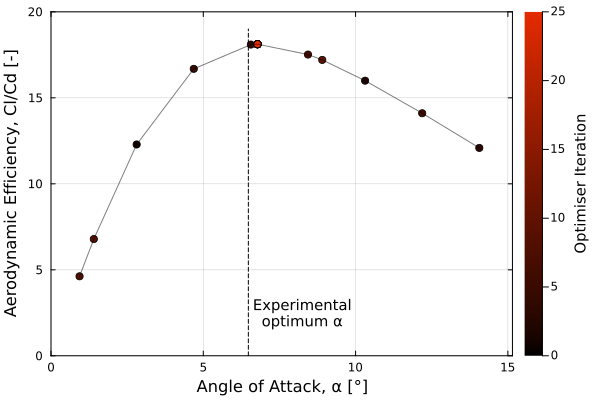
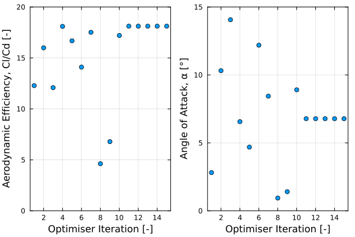

Advanced: 2D Aerofoil inflow optimisation
Introduction
Here, a simple optimisation is performed on a 2D NACA0012 aerofoil case. The optimal angle of attack for maximum lift-to-drag ratio is found using BayesianOptimization.jl. This example serves to illustrate both how XCALibre.jl can easily integrate with the Julia ecosystem, and the ease with which post-processing functions can be written.
Optimisation Setup
For those interested in running this example, the optimisation can be replicated by following these steps.
Install and load modules
To be able to run this example the following modules need to be installed. This can be done by entering into package mode (using "]" in the REPL) and typing the following:
add Plots, Distributions, LinearAlgebra, GaussianProcesses, BayesianOptimizationThis will download and install the required packages. Note that "CUDA" must also be added for GPU acceleration. Once installed, the packages can be loaded as follows:
using Pkg; # hide
installed = "Flux" ∈ keys(Pkg.project().dependencies) # hide
installed && Pkg.rm("Flux", io=devnull) #hide
Pkg.add("BayesianOptimization", io=devnull) # hide
using XCALibre, BayesianOptimization, Plots
using LinearAlgebra, GaussianProcesses, Distributions
# using CUDA # uncomment to run on GPU
"done"
nothing # hideDefine post processing functions
In order to calculate the lift-to-drag ratio, the pressure and viscous forces over the aerofoil must be calculated and summed. The lift and drag components can then be calculated (noting the rotated inflow vector to allow for different aerofoil angles of attack with the same mesh). A function returning the coefficients of lift and drag (not specifically needed for this example) is also presented for convenience.
# Lift to drag ratio calculation
lift_to_drag(patch::Symbol, model, ρ, nu, α) = begin
Fp = pressure_force(patch, model.momentum.p, ρ)
Fv = viscous_force(patch, model.momentum.U, ρ, nu, model.turbulence.nut)
Ft = Fp + Fv
Ft = [cos(-α*π/180) -sin(-α*π/180) 0; sin(-α*π/180) cos(-α*π/180) 0; 0 0 1]*Ft # Rotation matrix to account for rotated inflow
aero_eff = Ft[2]/Ft[1]
print("Aerofoil L/D: ",round(aero_eff,sigdigits = 4))
return aero_eff
end
# Aerodynamic coefficient calculation
aero_coeffs(patch::Symbol, chord, velocity, model, ρ, nu, α) = begin
Fp = pressure_force(patch, model.momentum.p, ρ)
Fv = viscous_force(patch, model.momentum.U, ρ, nu, model.turbulence.nut)
Ft = Fp + Fv
Ft = [cos(-α*π/180) -sin(-α*π/180) 0; sin(-α*π/180) cos(-α*π/180) 0; 0 0 1]*Ft # Rotation matrix to account for rotated inflow
C_l = 2Ft[2]/(ρ*(velocity[1]^2)*chord*0.001)
C_d = 2Ft[1]/(ρ*(velocity[1]^2)*chord*0.001)
print("Lift Coefficient: ",round(C_l,sigdigits = 4))
print("\nDrag Coefficient: ",round(C_d,sigdigits = 4))
return C_l,C_d
end Import 2D aerofoil mesh
Next, the aerofoil mesh .unv file must be imported. It must also be adapted to work with the GPU, if desired.
grids_dir = pkgdir(XCALibre, "examples/0_GRIDS")
grid = "NACAMesh.unv"
mesh_file = joinpath(grids_dir, grid)
mesh = UNV2D_mesh(mesh_file, scale=0.001)
mesh_dev = mesh # running on CPU
# mesh_dev = adapt(CUDABackend(), mesh) # uncomment to run on GPUSetup the CFD simulation as a function to be optimised
The BayesianOptimization.jl package can optimise a Julia function that is passed to it. To interface with XCALibre.jl, the entire CFD simulation setup must simply be wrapped within a function, which can then be passed to the optimiser. The function must take the variable to be changed (angle of attack, in this case) as its input, and must return the desired output (lift-to-drag ratio). Therefore, the post-processing step to calculate lift-to-drag ratio is also wrapped in the same function.
function foil_optim(α::Vector{Float64})
println("\nSelected α value: $(α[1])")
# Parameters
chord = 250.0
Re = 500000
nu, ρ = 1.48e-5, 1.225
Umag = (Re*nu)/(chord*0.001) # Calculate velocity magnitude for given Reynolds number
velocity = [Umag*cos(α[1]*π/180), Umag*sin(α[1]*π/180), 0.0] # Velocity calculation
νR = 10
Tu = 0.025
k_inlet = 3/2*(Tu*norm(velocity))^2
ω_inlet = k_inlet/(νR*nu)
# Boundary Conditions
noSlip = [0.0, 0.0, 0.0]
model = Physics(
time = Steady(),
fluid = Fluid{Incompressible}(nu = nu),
turbulence = RANS{KOmega}(),
energy = Energy{Isothermal}(),
domain = mesh_dev
)
@assign! model momentum U (
XCALibre.Dirichlet(:inlet, velocity),
XCALibre.Dirichlet(:bottom, velocity),
Neumann(:outlet, 0.0),
Neumann(:top, 0.0),
Wall(:foil, noSlip)
)
@assign! model momentum p (
Neumann(:inlet, 0.0),
Neumann(:bottom, 0.0),
XCALibre.Dirichlet(:outlet, 0.0),
XCALibre.Dirichlet(:top, 0.0),
Neumann(:foil, 0.0)
)
@assign! model turbulence k (
XCALibre.Dirichlet(:inlet, k_inlet),
Neumann(:outlet, 0.0),
Neumann(:top, 0.0),
Neumann(:bottom, 0.0),
XCALibre.Dirichlet(:foil, 1e-15)
)
@assign! model turbulence omega (
XCALibre.Dirichlet(:inlet, ω_inlet),
Neumann(:outlet, 0.0),
Neumann(:top, 0.0),
Neumann(:bottom, 0.0),
OmegaWallFunction(:foil)
)
@assign! model turbulence nut (
Neumann(:inlet, 0.0),
Neumann(:outlet, 0.0),
Neumann(:top, 0.0),
Neumann(:bottom, 0.0),
XCALibre.Dirichlet(:foil, 0.0)
)
schemes = (
U = set_schemes(divergence=Upwind, gradient=Midpoint),
p = set_schemes(divergence=Upwind),
k = set_schemes(divergence=Upwind, gradient=Midpoint),
omega = set_schemes(divergence=Upwind, gradient=Midpoint)
)
solvers = (
U = set_solver(
model.momentum.U;
solver = BicgstabSolver, # BicgstabSolver, GmresSolver
preconditioner = Jacobi(), # Jacobi
convergence = 1e-7,
relax = 0.6,
rtol = 1e-1,
),
p = set_solver(
model.momentum.p;
solver = GmresSolver, # change to BicgstabSolver for GPU runs
preconditioner = Jacobi(), # change to Jacobi() for GPU runs
convergence = 1e-7,
relax = 0.2,
rtol = 1e-2,
),
k = set_solver(
model.turbulence.k;
solver = BicgstabSolver,
preconditioner = Jacobi(),
convergence = 1e-7,
relax = 0.6,
rtol = 1e-1,
),
omega = set_solver(
model.turbulence.omega;
solver = BicgstabSolver,
preconditioner = Jacobi(),
convergence = 1e-7,
relax = 0.6,
rtol = 1e-1,
)
)
runtime = set_runtime(iterations=500, write_interval=500, time_step=1)
runtime = set_runtime(iterations=20, write_interval=-1, time_step=1) # hide
hardware = set_hardware(backend=CPU(), workgroup=1024)
# hardware = set_hardware(backend=CUDABackend(), workgroup=32) # uncomment to run on GPU
config = Configuration(solvers=solvers, schemes=schemes, runtime=runtime, hardware=hardware)
GC.gc()
initialise!(model.momentum.U, velocity)
initialise!(model.momentum.p, 0.0)
initialise!(model.turbulence.k, k_inlet)
initialise!(model.turbulence.omega, ω_inlet)
initialise!(model.turbulence.nut, k_inlet/ω_inlet)
residuals = run!(model, config)
# Residuals Graph
let
iterations = 1:length(residuals.Ux)
plot(; xlims=(0,runtime.iterations), ylims=(1e-10,0))
plot!(iterations, residuals.Ux, yscale=:log10, label="Ux")
plot!(iterations, residuals.Uy, yscale=:log10, label="Uy")
plot!(iterations, residuals.p, yscale=:log10, label="p")
end
aero_eff = lift_to_drag(:foil, model, ρ, nu, α[1]) # Calculates lift-to-drag ratio
# relocate XCALibre.jl vtk output files
aero_eff_out = round(aero_eff,digits=3)
α_out = round(α[1],digits=3)
vtk_files = filter(x->endswith(x,".vtk"), readdir())
for file ∈ vtk_files
dest = "vtk_results/LD_Ratio = $(aero_eff_out), Alpha = $(α_out).vtk"
mv(file, dest, force=true)
end
return aero_eff
endNote that this code saves a single .vtk file of the last CFD iteration each time the optimiser samples the function. This .vtk file is then automatically renamed with that sample's results, and sorted into a /vtk_results subfolder (which must be created before the optimisation is run).
Configure and run the Bayesian optimisation
Finally, the Bayesian optimiser must be configured before the optimisation can be performed. This example follows the BayesianOptimization.jl default configuration for the Gaussian process surrogate model, limiting input dimensions to 1 (the angle of attack). The surrogate model is then set to be optimised every 10 iterations. The inputs are limited to between 0 and 15 degrees. The problem is configured as a maximisation problem, with an initial sample period of 10 iterations and 50 maximum allowed iterations. The final line of the following code block is then run to perform the optimisation.
# Bayesian Optimisation (using BayesianOptimization.jl)
isdir("vtk_results") || mkdir("vtk_results")
# Initialises the Gaussian process surrogate model
model = ElasticGPE(1, #1 input dimension (α)
mean = MeanConst(0.0),
kernel = SEArd([0.0], 5.0),
capacity = 3000)
set_priors!(model.mean, [Normal(1, 2)])
modeloptimizer = MAPGPOptimizer(every = 10, maxeval = 40) # Optimises the Gaussian process every 10 iterations
# Optimisation Case Setup
opt = BOpt(foil_optim, # Function to be optimised - encloses the CFD case
model, # Gaussian process surrogate model defined above
UpperConfidenceBound(),
modeloptimizer, # Model optimiser defined above
[0.0], [15.0], # Minimum and maximum α constraints
repetitions = 1, # No repititions as CFD data is not noisy
maxiterations = 50, # Maximum iterations
sense = Max, # Maximisation problem
initializer_iterations = 10, # No. of initial random samples
verbosity = Progress)
opt = BOpt(foil_optim, # hide
model, # hide
UpperConfidenceBound(),
modeloptimizer, # hide
[0.0], [15.0], # hide
repetitions = 1, # hide
maxiterations = 5, # hide
sense = Max, # hide
initializer_iterations = 2, # hide
verbosity = Progress) # hide
result = boptimize!(opt) # Runs the optimisation procedure
using Pkg; Pkg.rm("BayesianOptimization", io=devnull) # hide
nothing # hide
"done"Example Optimisation Results

